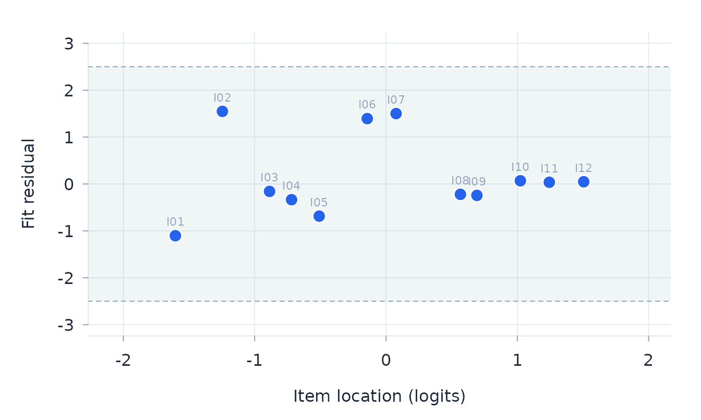
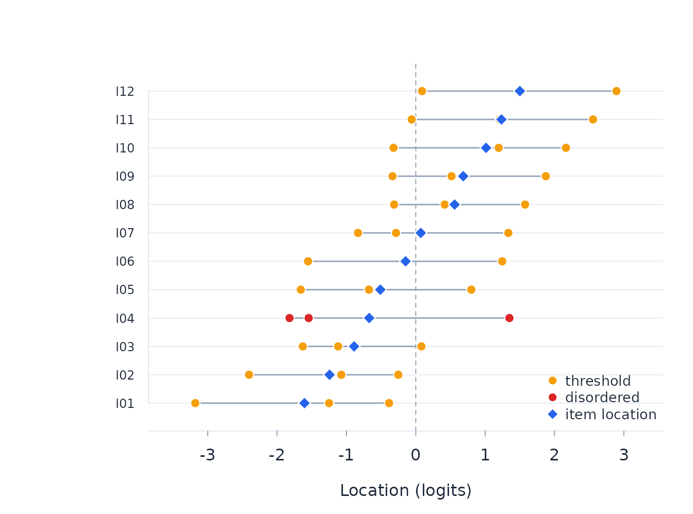
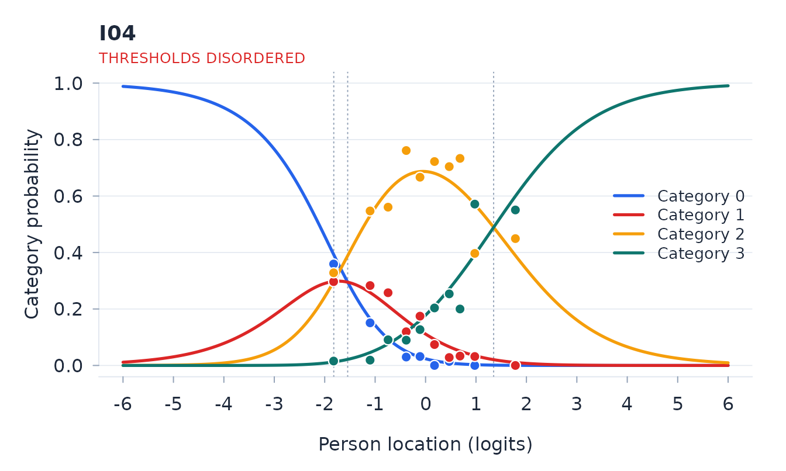
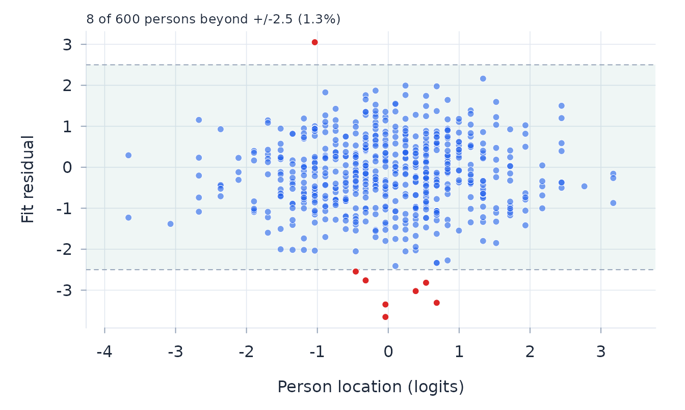
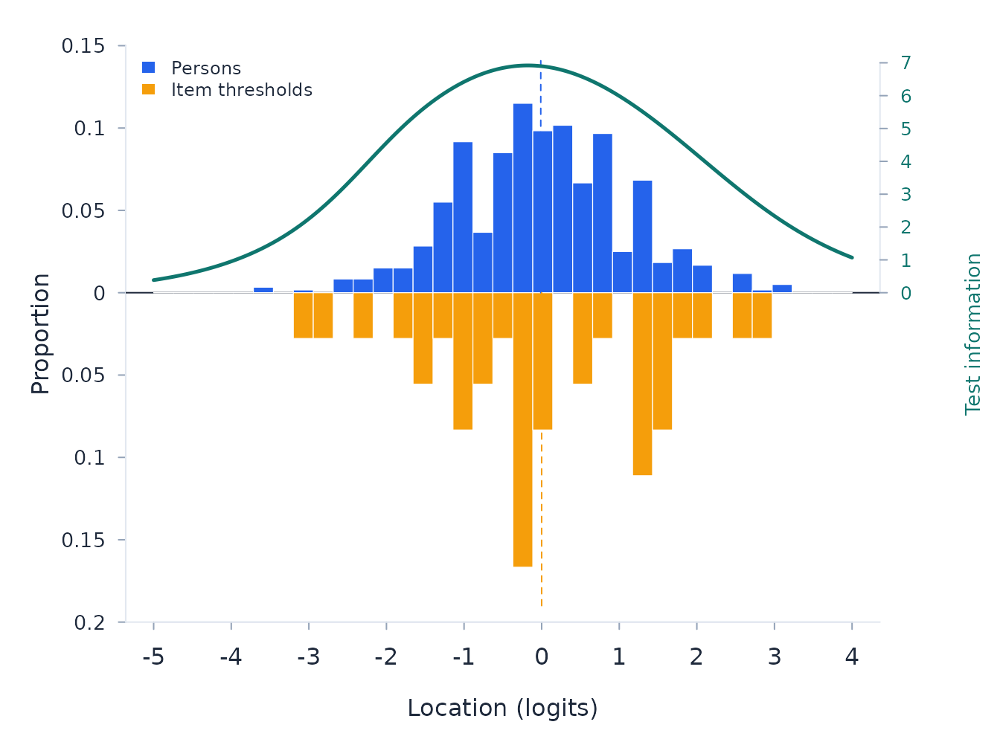
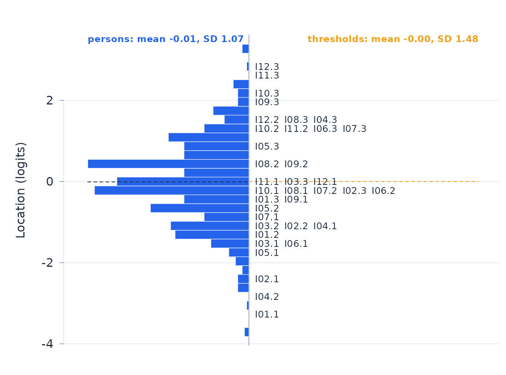
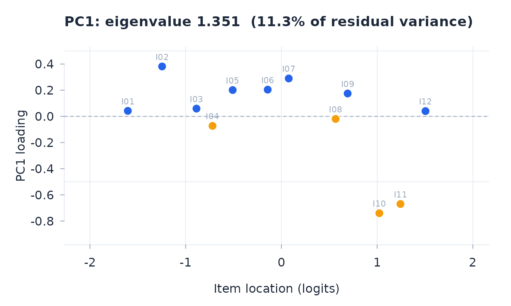
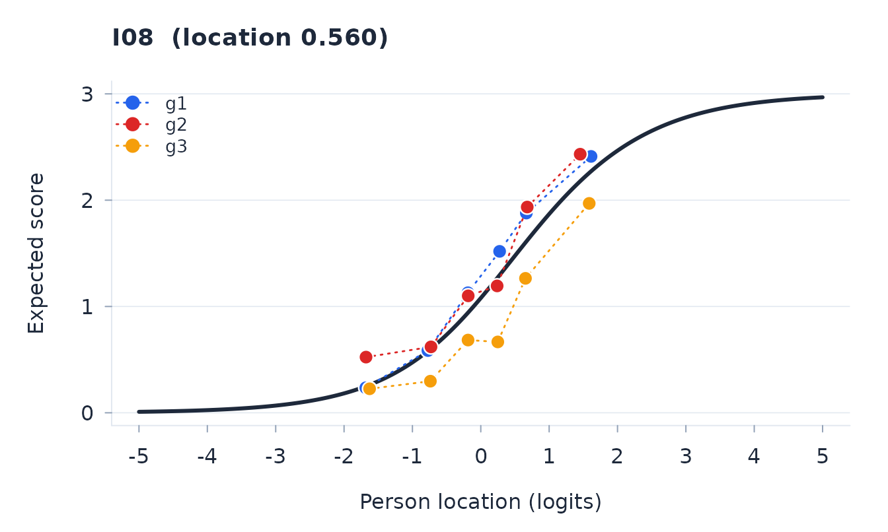

This vignette follows a Rasch analysis from the overall summary to item and person fit, targeting, dependence, and differential item functioning (DIF). The order matters. A fit statistic is difficult to interpret without knowing whether the scale separates the sample or supplies information over the relevant part of the latent trait.
The same analyses are available in the Shiny application. Run
rasch::run_app() to import data, fit a model, inspect the
results, and export tables or plots without writing R analysis code.
Fit the model required by the scoring structure
rasch fits the partial credit model by default (Rasch
1960; Andrich and Marais 2019). Dichotomous data are its one-threshold
special case. Set model = "RSM" only when the same category
threshold structure is intended to hold across items.
For person \(n\), item \(i\), and score \(x=0,\ldots,m_i\), the partial credit model is
\[ P(X_{ni}=x)= \frac{\exp\left\{x\theta_n-\sum_{k=1}^{x}\delta_{ik}\right\}} {\sum_{y=0}^{m_i}\exp\left\{y\theta_n- \sum_{k=1}^{y}\delta_{ik}\right\}}. \]
The rating scale model constrains \(\delta_{ik}=\beta_i+\tau_k\). Pairwise conditioning removes \(\theta_n\) from the item likelihood. Person locations are subsequently estimated by Warm’s weighted likelihood method (Warm 1989).
The example is polytomous and contains three person groups. One item has disordered generating thresholds, one has uniform DIF, and one item pair has local response dependence. These departures make the diagnostic sequence visible without changing the commands used for observed data. Before fitting observed data, check the coding and frequency of every category. Negative scores are read as missing; valid categories begin at zero.
d <- simulate_rasch(
n_persons = 600,
n_items = 12,
model = "PCM",
n_categories = 4,
difficulty = c(-1.5, 1.5),
disordered = "I04",
dependence = list(pairs = list(c("I10", "I11")), strength = 1.3),
dif = list(items = "I08", uniform = 0.8),
n_groups = 3,
seed = 17
)
fit <- rasch(d, model = "PCM", id = "id", factors = "group")Overall summary and reliability
The summary establishes whether estimation converged and gives the overall item–trait interaction, reliability, and the package’s qualitative assessment of the power of fit tests. It should be read before individual item or person results.
fit
#> rasch PCM analysis: 12 items, 600 persons
#> Pairwise conditional ML (Zwinderman): converged in 5 iterations
#> PSI 0.851 (no extremes 0.851), item SI 0.995, alpha 0.855, power of fit: good
#> Total item-trait chi-square 101.760 on 108 df, p = 0.651The person separation index (PSI) compares the observed variance of person locations with their mean error variance:
\[ \mathrm{PSI}= \frac{\operatorname{Var}(\hat\theta)- \operatorname{mean}\{\operatorname{SE}(\hat\theta)^2\}} {\operatorname{Var}(\hat\theta)}. \]
The implementation truncates negative values at zero.
fit$psi_noext removes persons with extreme scores and is
useful when extremes inflate the observed spread. The separation ratio
and number of strata express the same information on more interpretable
scales.
The power label is a screening judgement based on PSI, not a formal power calculation. Low reliability weakens the ordering of persons and the formation of distinct class intervals, so item–trait and DIF tests may fail to detect real departures. Power also depends on sample size, test length, targeting, category use, and trait spread. Conversely, a large sample can make a small departure statistically significant. Here the PSI is 0.85, which the package classifies as good; weak separation is therefore not an immediate explanation for a quiet fit test. Fit residuals, effect sizes, plots, and substantive importance remain necessary.
Item estimates, fit, and thresholds
Item locations and their standard errors should be read alongside fit
residuals and the Holm-adjusted item–trait probabilities. The table
shows the six items with the largest absolute residuals; the complete
results are in fit$items. A positive residual indicates
more variation than expected and a negative residual indicates responses
that are more predictable than expected. The conventional \(\pm2.5\) band is a screening rule rather
than a separate hypothesis test.
item_order <- order(abs(fit$items$fit_resid), decreasing = TRUE)
head(fit$items[item_order, c(
"item", "location", "se", "fit_resid", "p_adj"
)], 6)
#> item location se fit_resid p_adj
#> I02 -1.246 0.079 1.548 1.000
#> I07 0.077 0.057 1.501 1.000
#> I06 -0.143 0.059 1.394 1.000
#> I01 -1.604 0.106 -1.103 1.000
#> I05 -0.509 0.059 -0.685 1.000
#> I04 -0.719 0.072 -0.335 1.000
plot_item_map(fit)
For a polytomous item, successive thresholds should normally increase on the latent scale. The threshold map shows their order directly. Item I04 has an intervening category without its own region on the scale; the category curves show the same problem in probability form.
plot_threshold_map(fit)
plot_ccc(fit, "I04", observed = TRUE)
Disordering alone does not justify collapsing categories. The response-option meanings, observed use, and category curves should support any rescoring. The model must then be refitted and checked again.
Person estimates and fit
Person fit addresses the consistency of each response pattern with the fitted scale. The following table puts the largest absolute residuals first. Positive residuals indicate unexpectedly erratic patterns; negative residuals indicate patterns that are unusually predictable.
person_order <- order(abs(fit$person$fit_resid),
decreasing = TRUE, na.last = TRUE)
head(fit$person[person_order, c(
"id", "group", "raw", "theta", "se", "fit_resid"
)], 6)
#> id group raw theta se fit_resid
#> P0486 g3 18 -0.042 0.381 -3.454
#> P0238 g1 23 0.691 0.395 -3.241
#> P0001 g1 18 -0.042 0.381 -3.163
#> P0031 g1 11 -1.062 0.397 2.999
#> P0493 g1 21 0.391 0.387 -2.912
#> P0327 g3 22 0.540 0.390 -2.742
plot_person_fit(fit)
An unexpected response pattern may reflect coding or data-entry errors, careless responding, a secondary trait, or a genuine but unusual person. It is not, by itself, a reason to remove the person. In this example, 7 persons fall outside the displayed band. Fit residuals are unavailable for extreme response patterns because those patterns do not provide an interior location at which fit can be assessed.
Targeting and information
Targeting concerns the match between the person distribution and the item threshold distribution. The table reports their locations and spread, the proportions of persons beyond the threshold range, and the principal reliability indices.
fit$targeting
#> $person_mean
#> [1] -0.01154
#>
#> $person_sd
#> [1] 1.066
#>
#> $person_mean_noext
#> [1] -0.01154
#>
#> $item_mean
#> [1] 0
#>
#> $threshold_range
#> [1] -3.184 2.893
#>
#> $prop_below
#> [1] 0.003333
#>
#> $prop_above
#> [1] 0.005For a Rasch model, test information is the sum of the conditional response variances:
\[ I(\theta)=\sum_i \operatorname{Var}(X_i\mid\theta), \qquad \operatorname{SE}(\hat\theta)\approx I(\theta)^{-1/2}. \]
The person–item map below places person locations and item thresholds on the same logit scale. The information curve shows where the test is most precise.
plot_pimap(fit, information = TRUE)
The Wright map shows the same alignment in the conventional vertical arrangement: the person distribution beside the item thresholds on one logit scale.
plot_wright(fit)
The optional WrightMap package draws the same map with
greater flexibility, including several person and item panels (Torres
Irribarra and Freund 2025). Polytomous thresholds are labelled
t1, t2, and so on. Threshold labels are
omitted for a wholly dichotomous scale; a dichotomous item in a mixed
scale retains t1. Panels should answer a substantive
question; here the person distributions are separated by the fitted
group factor.
if (requireNamespace("WrightMap", quietly = TRUE)) {
wright_map(fit, person_panels = "group")
}If WrightMap is not installed, install it with
install.packages("WrightMap") before running this
chunk.
Local and trait dependence
Local response dependence occurs when two responses remain associated
after conditioning on the latent trait. Yen’s \(Q3\) is the correlation between two items’
standardised residuals. Because raw \(Q3\) values have a negative baseline in a
finite test, q3_star subtracts the average off-diagonal
value.
q3 <- residual_correlations(fit)
q3$average
#> [1] -0.08639
head(q3$pairs[, c("item_a", "item_b", "q3", "q3_star")], 5)
#> item_a item_b q3 q3_star
#> 1 I10 I11 0.1266703 0.21306
#> 2 I02 I05 0.0045201 0.09091
#> 3 I01 I04 -0.0009814 0.08541
#> 4 I06 I07 -0.0173825 0.06901
#> 5 I02 I03 -0.0244845 0.06190
plot_resid_cor(fit)
There is no universal critical value for adjusted \(Q3\) (Christensen, Makransky and Horton
2017). Its size, the response process, and the content of the item pair
matter. When theory supports treating dependent items as one superitem,
combine_items() refits the complete calibration and
spread_test() compares its threshold spread with the
binomial bound. The bound does not apply to a superitem containing a
polytomous component.
Trait dependence is examined through the residual components and by comparing person estimates from opposed item subsets (Smith 2002). For subsets \(A\) and \(B\), the person-level statistic is
\[ t_n=\frac{\hat\theta_{nA}-\hat\theta_{nB}} {\sqrt{\operatorname{SE}(\hat\theta_{nA})^2+ \operatorname{SE}(\hat\theta_{nB})^2}}. \]
Under unidimensionality, about the nominated alpha level of these comparisons should be significant. The exact binomial interval, the residual loadings, and the score points in each subset are part of the result.
dimensionality <- dimensionality_test(fit)
plot_pca(fit)
Here, 4.5% of the person comparisons are significant (exact 95% interval 3.0% to 6.5%). The test does not flag trait dependence, but one opposed subset contains only 12 score points. A quiet result from a short subtest is inconclusive rather than evidence that a secondary trait is absent.
Differential item functioning
Person factors must be nominated when the model is fitted. With a person factor \(G\) and trait class interval \(C\), the residual model is
\[ z=\mu+G+C+G\mathbin{:}C+\varepsilon. \]
The factor term tests uniform DIF; the interaction with class
interval tests non-uniform DIF. dif_anova() fits all
nominated factors together, recognises within-person factors in repeated
designs, and applies Holm familywise correction over the item-by-term
tests.
dif <- dif_anova(fit, sizes = TRUE)
flagged_dif <- subset(dif$summary, uniform_DIF | nonuniform_DIF)
flagged_dif[, c(
"item", "term", "F_uniform", "p_uniform_adj", "eta2_uniform",
"F_nonuniform", "p_nonuniform_adj", "eta2_nonuniform"
)]
#> item term F_uniform p_uniform_adj eta2_uniform F_nonuniform p_nonuniform_adj
#> I08 group 20.043 < 0.001 0.067 1.578 1.000
#> eta2_nonuniform
#> 0.026
plot_icc(fit, "I08", group = "group")
For a significant factor with more than two levels, the follow-up
should estimate the relevant differences in Rasch logits rather than
rely on a generic Tukey procedure. With sizes = TRUE,
dif_anova() returns the Holm-adjusted marginal pairwise
comparisons for significant main effects and difference-in-differences
for significant interactions.
dif$posthoc[, c(
"item", "contrast", "estimate", "se", "p_adj",
"lower", "upper", "practical"
)]
#> item contrast estimate se p_adj lower upper practical
#> I08 g2 - g1 -0.039 0.139 0.777 -0.312 0.233
#> I08 g3 - g1 0.705 0.148 < 0.001 0.415 0.995 *
#> I08 g3 - g2 0.745 0.147 < 0.001 0.457 1.032 *Statistical significance and practical magnitude answer different
questions. Any split must be supported by the response process and
should be applied with resolve_dif(), which refits the
calibration and updates the item and person estimates. The revised fit
then goes through the same summary, fit, targeting, dependence, and DIF
sequence.
References
Andrich, D., and Marais, I. (2019). A Course in Rasch Measurement Theory: Measuring in the Educational, Social and Health Sciences. Springer.
Christensen, K. B., Makransky, G., and Horton, M. (2017). Critical values for Yen’s Q3: Identification of local dependence in the Rasch model using residual correlations. Applied Psychological Measurement, 41(3), 178–194.
Holm, S. (1979). A simple sequentially rejective multiple test procedure. Scandinavian Journal of Statistics, 6(2), 65–70.
Rasch, G. (1960). Probabilistic Models for Some Intelligence and Attainment Tests. Copenhagen: Danish Institute for Educational Research. (Expanded edition, 1980, Chicago: University of Chicago Press.)
Smith, E. V. Jr. (2002). Detecting and evaluating the impact of multidimensionality using item fit statistics and principal component analysis of residuals. Journal of Applied Measurement, 3(2), 205–231.
Torres Irribarra, D., and Freund, R. (2025). WrightMap: IRT item-person map with ConQuest integration. R package version 1.5.
Warm, T. A. (1989). Weighted likelihood estimation of ability in item response theory. Psychometrika, 54(3), 427–450.
Yen, W. M. (1984). Effects of local item dependence on the fit and equating performance of the three-parameter logistic model. Applied Psychological Measurement, 8(2), 125–145.